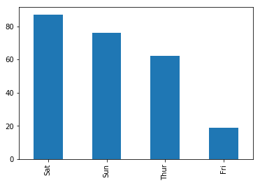
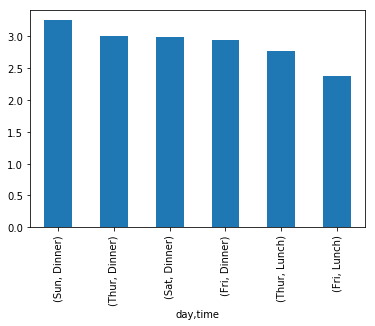
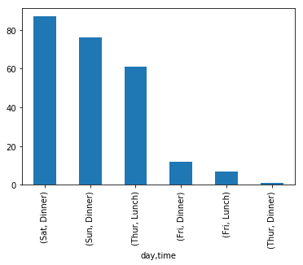

Bar Chart using Pandas
- Mar 7 • 7 min read
- Key Terms: bar chart
Import Modules
import matplotlib.pyplot as plt
import pandas as pd
% matplotlib inline
Read in Tips Dataset from URL
This data contains logs of tips received by waiters and waittresses at a restaurant.
df_tips = pd.read_csv('https://raw.githubusercontent.com/mwaskom/seaborn-data/master/tips.csv')
Preview the Data
Preview the top 5 rows
df_tips.head()
| total_bill | tip | sex | smoker | day | time | size | |
|---|---|---|---|---|---|---|---|
| 0 | 16.99 | 1.01 | Female | No | Sun | Dinner | 2 |
| 1 | 10.34 | 1.66 | Male | No | Sun | Dinner | 3 |
| 2 | 21.01 | 3.50 | Male | No | Sun | Dinner | 3 |
| 3 | 23.68 | 3.31 | Male | No | Sun | Dinner | 2 |
| 4 | 24.59 | 3.61 | Female | No | Sun | Dinner | 4 |
View the count of non-null values per colummn and data types
df_tips.info()
<class 'pandas.core.frame.DataFrame'>
RangeIndex: 244 entries, 0 to 243
Data columns (total 7 columns):
total_bill 244 non-null float64
tip 244 non-null float64
sex 244 non-null object
smoker 244 non-null object
day 244 non-null object
time 244 non-null object
size 244 non-null int64
dtypes: float64(2), int64(1), object(4)
memory usage: 13.4+ KB
Examine Gender Values of Tip Records
Bar charts are great at visualizing counts of categorical data.
With this tips dataset, we have several categorical fields including sex, smoker, day, time and size.
Examine Data to be Passed into Plots
First, we can call the value_counts method on the sex (aka gender) field to see the count of unique values.
df_tips['sex'].value_counts()
Male 157
Female 87
Name: sex, dtype: int64
The output above is a Pandas Series in which the index items are Male and Female and the values are the count of each index item in our original tips sex field.
df_tips['sex'].value_counts().index
Index(['Male', 'Female'], dtype='object')
type(df_tips['sex'].value_counts())
pandas.core.series.Series
Visualize Count of People by Gender
We access the sex field, call the value_counts method to get a count of unique values, then call the plot method and pass in bar (for bar chart) to the kind argument.
df_tips['sex'].value_counts().plot(kind='bar');

In our tips dataset, we have more records of tips for male waiters than female waitresses.
Visualize Count of Days for Recorded Tips
We access the day field, call the value_counts method to get a count of unique values, then call the plot method and pass in bar (for bar chart) to the kind argument.
df_tips['day'].value_counts().plot(kind='bar');

Most of our tip records were on Saturday followed by Sunday. Only 4 days have recorded tips.
Examine Tip Values by Day
The main question I have on this dataset is: "On what day and time do people get tipped the most?" If I was a waiter, I'd purposely want to work the shifts in which tip amounts would be highest.
To answer this question, we need to perform a group by operation. Our process will involve the following steps:
- Split the data by day
- After the split by day, split the data by time
- For the tip field, compute the mean
A Simple Walk Through of a Group By with Sample Data
df_sample = df_tips.sample(3, random_state=1)
We now have a record of just 3 tip values.
df_sample
| total_bill | tip | sex | smoker | day | time | size | |
|---|---|---|---|---|---|---|---|
| 67 | 3.07 | 1.00 | Female | Yes | Sat | Dinner | 1 |
| 243 | 18.78 | 3.00 | Female | No | Thur | Dinner | 2 |
| 206 | 26.59 | 3.41 | Male | Yes | Sat | Dinner | 3 |
If we split the data by day and by time, we'd get 2 records of Dinner on Saturday and 1 record of Dinner on Thursday.
For our 2 records of Dinner on Saturday, we can compute the average tip amount by the operation ($1.00 + $3.41)/2 which equals approximately $2.20.
For our 1 record of Dinner on Thursday, our average tip amount is simply $3.00.
Group By Operation on our Sample Data
We call the groupby method on our df_sample dataframe, grouping by the day and time fields, and calculating the mean (aka average) tip amount in dollars.
df_sample.groupby(by=['day', 'time'])['tip'].mean()
day time
Sat Dinner 2.205
Thur Dinner 3.000
Name: tip, dtype: float64
The output is a Pandas Series.
type(df_sample.groupby(by=['day', 'time'])['tip'].mean())
pandas.core.series.Series
Group By Operation on Entire Tips Dataset
We perform the same operations on our entire tips dataset.
df_tips.groupby(by=['day', 'time'])['tip'].mean()
day time
Fri Dinner 2.940000
Lunch 2.382857
Sat Dinner 2.993103
Sun Dinner 3.255132
Thur Dinner 3.000000
Lunch 2.767705
Name: tip, dtype: float64
Visualize Average Tip Amounts Broken Down into Day and Time
We take the output of our groupby operation, call the sort_values method to output tip amount values from highest to lowest (descending order), then call the Pandas plot method and pass in bar (for bar chart) to the kind argument.
df_tips.groupby(by=['day', 'time'])['tip'].mean().sort_values(ascending=False).plot(kind='bar');

The bar graph illustrates that dinner on Sunday has the highest average tip amounts.
Examine Number of Tips Given by Day and Time
Group By Operation
Different than the groupby operations above, below we call thesize method to count the number of records by day and time.
df_tips.groupby(by=['day', 'time']).size()
day time
Fri Dinner 12
Lunch 7
Sat Dinner 87
Sun Dinner 76
Thur Dinner 1
Lunch 61
dtype: int64
Visualize Number of Tips Given by Day and Time
To visualize the output above, we call thesort_values method to output the count of tip records from highest to lowest (descending order), then call the Pandas plot method and pass in bar (for bar chart) to the kind argument.
df_tips.groupby(by=['day', 'time']).size().sort_values(ascending=False).plot(kind='bar');

This bar graph illustrates the most records for tips are for dinner on Saturday followed by dinner on Sunday.